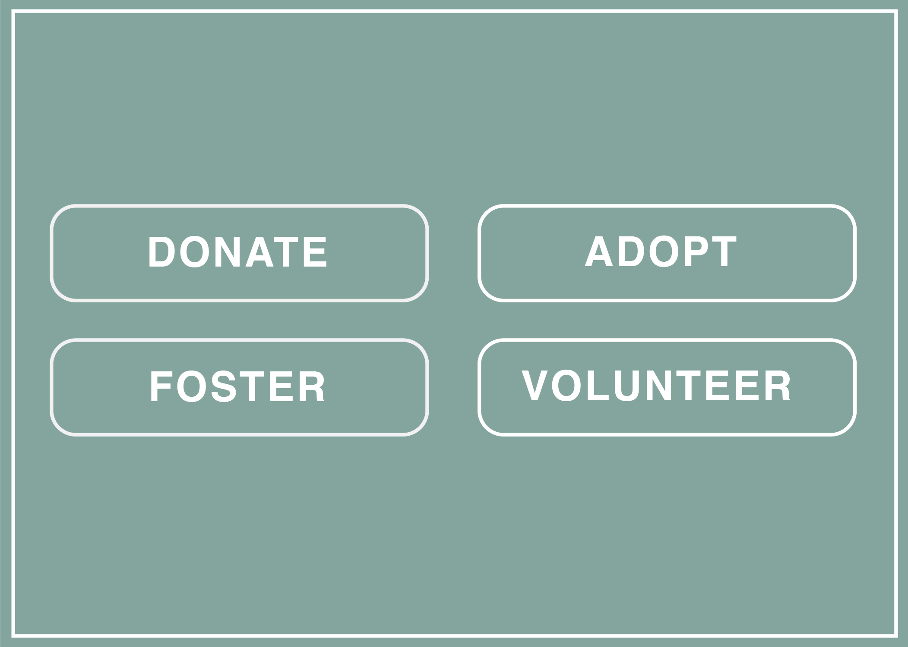
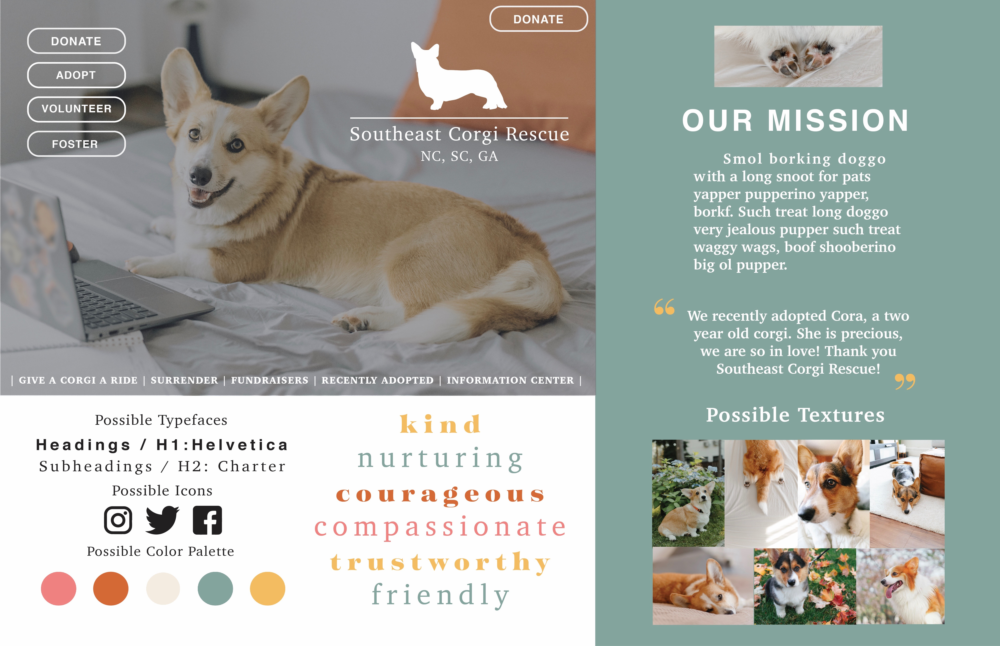

Solution
Call to Action
After the research, I formed a Call to Action to accomplish the goal of the website, as well as a style tile to help convey the general feel.

I have chosen to put four actions for the Call to Action buttons: donate, adopt, foster, and volunteer. I was unable to choose one or two of these calls to action because they are all so important and are equal in the need for each action. The organization needs donations and volunteers to keep going, but the whole point of the organization is to get corgis forever homes. The Call to Action buttons are short and concise, showing the website user exactly what the button will lead them to the donate button to donate, the adopt button to adopt a corgi, the foster button to foster a corgi, and the volunteer button to volunteer to SCR. These buttons will be easy to understand so that Southeast Corgi Rescue can accomplish the goals they have for their organization.
Style Tile
I created a style tile to help convey the general feel of the website I will design.

The adjectives I chose to visually describe the Southeast Corgi Rescue website I want to create are kind, nurturing, courageous, compassionate, trustworthy, and friendly. These adjectives would help a user feel welcome and would encourage them to trust Southeast Corgi Rescue enough to donate to them, volunteer at the organization, or adopt or foster a corgi from them.
I chose the typeface Helvetica for my large headings and Charter for my subheadings. These type choices appear sophisticated and are easy to read. I updated the logo while keeping the corgi outline from the original, to be more simplistic. Instead of showing the outlines of all the states in which SCR is located, I chose to list the abbreviations of the states in the logo itself: NC, SC & GA. For the body copy and some second headlines, I will use Baskerville because the words are very easy to read and still look sophisticated.
I want to use imagery that seems happy, warm and shows corgis and corgis with their owners. This will encourage individuals to adopt or foster because they can visualize themselves as the corgi owners seen on the website. These precious images will also help to encourage donations and volunteers.
The color scheme is also aimed at feeling kind and friendly, with warm colors: neutrals, sage green, mustard yellow, pumpkin orange, ivory, and coral. Small touches of color in some elements will bring life to the website as well as unite the page.
The style tile also showcases the new logo I designed for Southeast Corgi Rescue to match their new, more modern, simplistic branding style. I wanted the logo to be simple but also informative by telling the full name of the organization, where they are located, and show an outline of a corgi, which was on their last logo. I chose to do everything in white to keep the logo very clean looking.